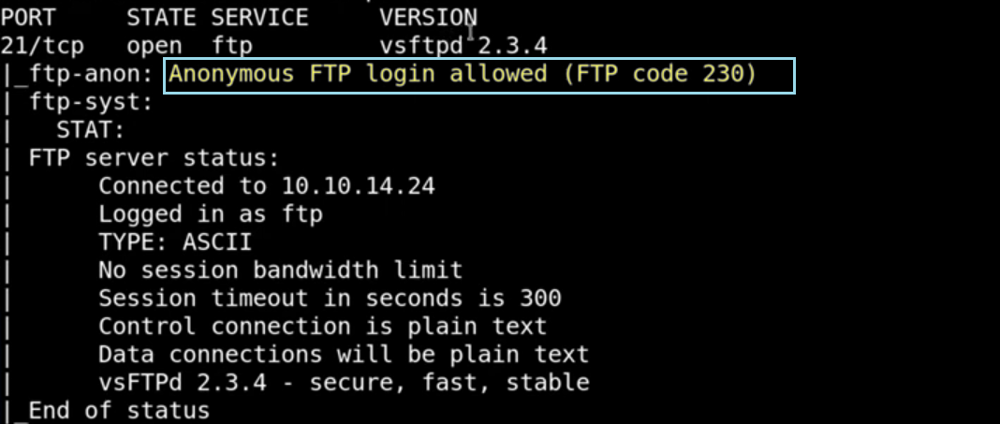

# ftp <ip>
#Name: anonymous
#password: anonymous
TASK
: UPLOAD A FILE(.jpeg) over machine
Advantage:
If we have option to upload and somehow execute it(in this case via port 80 ) we can upload and then execute malware
>put <filename>